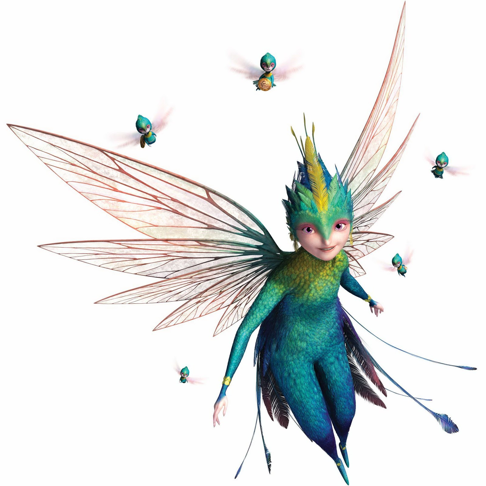

Toothiana
 Some years ago American author William Joyce found that no-one seemed to
know the stories behind childhood characters such as Father Christmas
and the Easter Bunny, so he decided to write them. His 'Guardians of
Childhood' books soon became popular and in 2012 DreamWorks Animation
released a movie called 'Rise of the Guardians' based on the book
characters featuring Father Christmas, Easter Bunny, Jack Frost,
Sandman and Tooth Fairy. Through reasons that were almost certainly
not due to the movie itself, it had a rocky start and underperformed
at the box office. Since then however 'Rise of the Guardians' has
become established as one of DreamWork's finest movies and is loved
by millions all over the world.
Some years ago American author William Joyce found that no-one seemed to
know the stories behind childhood characters such as Father Christmas
and the Easter Bunny, so he decided to write them. His 'Guardians of
Childhood' books soon became popular and in 2012 DreamWorks Animation
released a movie called 'Rise of the Guardians' based on the book
characters featuring Father Christmas, Easter Bunny, Jack Frost,
Sandman and Tooth Fairy. Through reasons that were almost certainly
not due to the movie itself, it had a rocky start and underperformed
at the box office. Since then however 'Rise of the Guardians' has
become established as one of DreamWork's finest movies and is loved
by millions all over the world.

In 2014 Stuart visited his six-year-old niece who was watching the
movie. Stuart was impressed with what he saw. The movie was
beautiful, the sets fascinatingly intricate, the colours and lighting
stunning and the music awesome. The character designs were very
different. In fact the Tooth Fairy was probably the most unexpected,
not being pale or white at all.
She is part human, part hummingbird. Knowing that a child's lost tooth
contains their memories, she and her army of mini-fairies collect the
teeth and save them at the Tooth Palace. In this way, should that person
ever need to remember what's important, she can help them. Tooth, as she
is known, can be very excitable, yet she is caring and places her duty
as the Guardian of Childhood Memories above all else.

As she flitted across the screen in
a flash of over-excited colour Stuart's niece commented that she had
recently collected a tooth and forgotten to leave a coin. At that
moment Stuart had the incredible idea that it would be awesome if
Tooth could come to his niece's seventh birthday with the birthday
cake and the missing coin.

So began a story that would ultimately involve dozens of people, change people's lives forever and bring memories to thousands.

As
can be imagined it took a real team effort to track down Tooth's
Palace in Furthest Far East, make contact with Tooth and convince her
that it would be safe to be seen. But after seven months of hard work
and sleepless nights the dream came true and Tooth did indeed appear
at Stuart's niece's birthday party with the cake and coin.
After that everyone wondered what they could do next, so it was decided to take Tooth to Comic Conventions to see what happened. She was an instant hit and very popular. Over the next few years Tooth, often accompanied by Jack Frost appeared at conventions and other events all over the UK, performing on stage at some of the biggest venues including the O2, ExCel Centre, London Olympia and Tobacco Dock.
 In
2017 former Doctor Who actor John Levene spotted Tooth at a
convention and chose to make a movie with Tooth and Jack. This took
our characters to locations over southern England for filming. Then
Tooth and Jack made their first overseas trip to the most famous
Comic Con in the World- San Diego Comic Con. They were a huge hit,
appearing on TV and radio and being photographed constantly. They
were also invited to DreamWorks Animation studios in Glendale where
'Rise of the Guardians' was made and had the priviledge of meeting
Tooth's animator in the movie.
In
2017 former Doctor Who actor John Levene spotted Tooth at a
convention and chose to make a movie with Tooth and Jack. This took
our characters to locations over southern England for filming. Then
Tooth and Jack made their first overseas trip to the most famous
Comic Con in the World- San Diego Comic Con. They were a huge hit,
appearing on TV and radio and being photographed constantly. They
were also invited to DreamWorks Animation studios in Glendale where
'Rise of the Guardians' was made and had the priviledge of meeting
Tooth's animator in the movie.

 In
2018 our characters were fortunate to receive many invitations to all
sorts of events including on stage at London Film and Comic Con and
culminating in the switching-on of Christmas lights in the towns of
Grays and Oswestry. 2019 looks like being an even bigger year with
invitations to events on many weekends throughout the year and a trip
to New York Comic Convention in the planning.
In
2018 our characters were fortunate to receive many invitations to all
sorts of events including on stage at London Film and Comic Con and
culminating in the switching-on of Christmas lights in the towns of
Grays and Oswestry. 2019 looks like being an even bigger year with
invitations to events on many weekends throughout the year and a trip
to New York Comic Convention in the planning.

Meanwhile
William Joyce has been in discussions with DreamWorks about making
new work with the Guardians and our Tooth and Jack have done their
best to support this cause, to continue to bring joy, pleasure and
memories to everyone everywhere, for that is the most wonderful and
rewarding think to be able to do.
Special thanks go to the team who enabled Tooth to make her first appearance, including Sherry, Nenia, Andy, April, Graham, Eric and Matt. Huge thanks are owed to those who have helped our characters to appear ever since including Ngoc, Jazz, Levi, Greg, Mai-Lan, Nick, Doreen and Celeste.
We remember with great affection our most dedicated team member Angie, who's reliability and commitment enabled Tooth to make a movie and appear at over seventeen events over two years including San Diego and DreamWorks Animation, collecting a string of awards along the way. Angie unexpectedly passed away on the actual fifth anniversary of the release of 'Rise of the Guardians' and just weeks after Tooth had appeared at MCM Comic Con London October 2017. We are sure Angie would have wanted Tooth to continue to bring joy and pleasure and we have worked hard to make it happen.